Step 2 of 10
Prepare the Azure subscription
Make sure the subscription can host the cluster in Indonesia Central: the resource providers are registered, there is vCPU quota for the node size, and one tagged resource group is ready to hold every resource in the demo.
Transcript
Step two. Before we deploy anything, we make sure the subscription is ready: resource providers, v C P U quota, and a resource group in Indonesia Central.
In the Azure portal, open Subscriptions, and select the subscription you'll use for this demo.
In the subscription menu, search for resource providers, and open that page.
Filter by name. Microsoft dot Container Service, the A K S provider, must show Registered.
Microsoft dot Monitor powers the Azure Monitor workspace for managed Prometheus. It's registered too.
Microsoft dot Policy Insights is used by the Azure Policy add-on. If a provider shows Not Registered, select it and choose Register.
Next, quota. Open Quotas, then My quotas for Compute, and set the region filter to Indonesia Central.
Search for D D S version 5. The cluster needs eight v C P Us for two nodes, and sixteen if it scales out to four.
Now open Resource groups, and select Create.
Keep your subscription, name the group R G contoso health A K S, and open the region list.
Choose Indonesia Central, so data and compute stay in Indonesia.
Open the Tags tab. Tags drive cost reporting, and they make ownership obvious.
Add three tags: workload, environment, and cost center. Then select Review and create.
Check the summary, and select Create.
Done. Everything for this demo lands in this one resource group, so clean-up later is a single delete.
What you will do#
- Confirm the resource providers the demo uses are Registered.
- Confirm vCPU quota for the
Standard_D4ds_v5family (DDSv5) in Indonesia Central. - Create
rg-contoso-health-aksin Indonesia Central with three tags.
Video and screenshots were recorded in the Azure portal, signed in as the demo administrator.
This page clicks through the portal and GitHub, with a video and a screenshot for every click. The same result is also defined as code: see Do it as code at the end of the page. Pick one path for steps 2 to 4; scripts/bootstrap.sh runs all three as code in one go.
Check resource providers#
Open Subscriptions and select the subscription you will use for the demo.
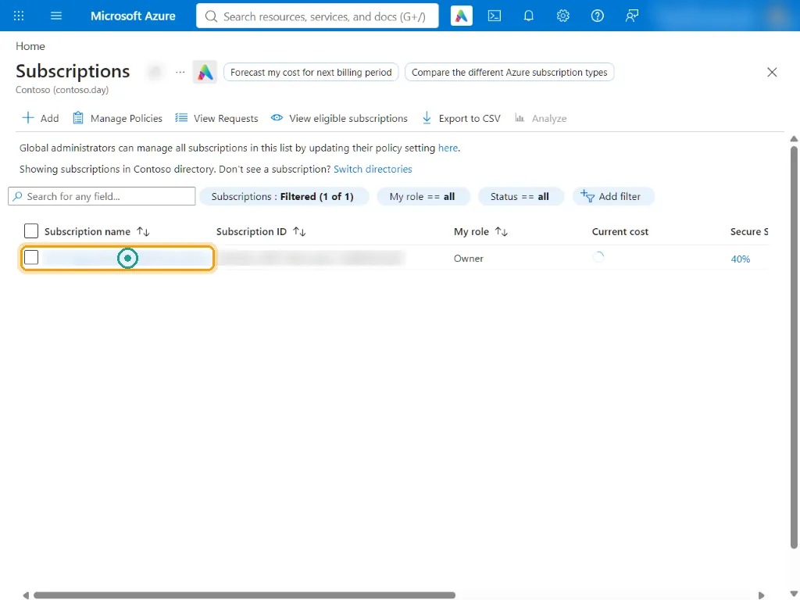
Azure portal In the subscription menu, search for and open Resource providers.
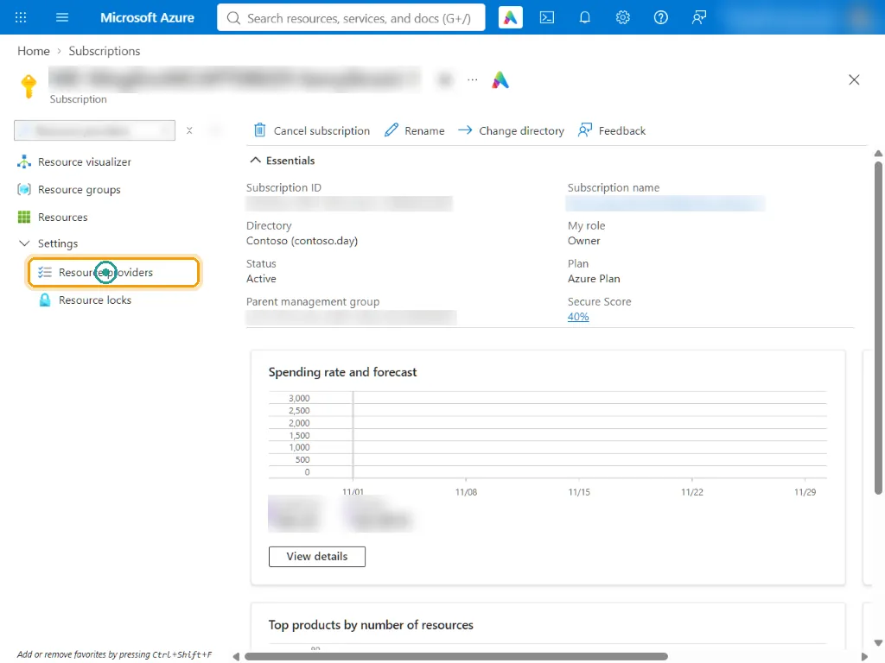
Azure portal Filter by name. Microsoft.ContainerService (AKS) must show Registered. Repeat for the other providers in the table.
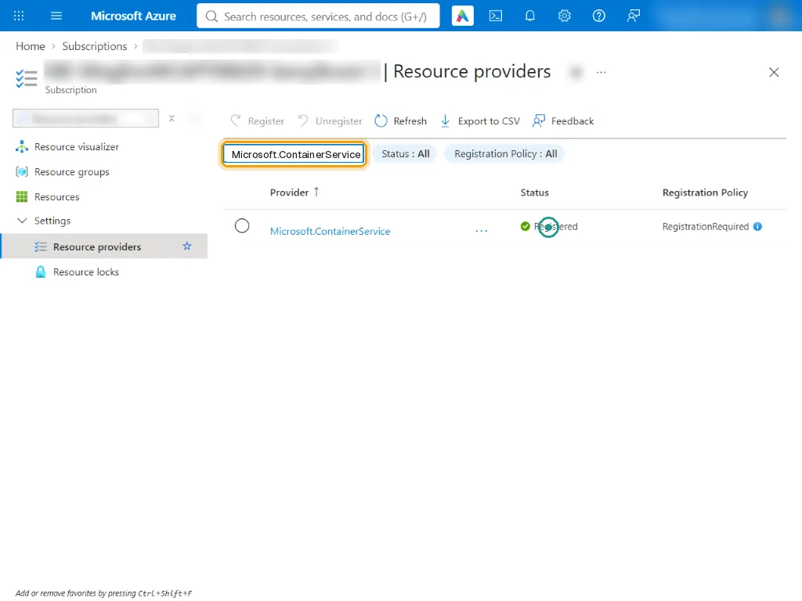
Azure portal Microsoft.Monitor powers the Azure Monitor workspace (managed Prometheus). Registered.
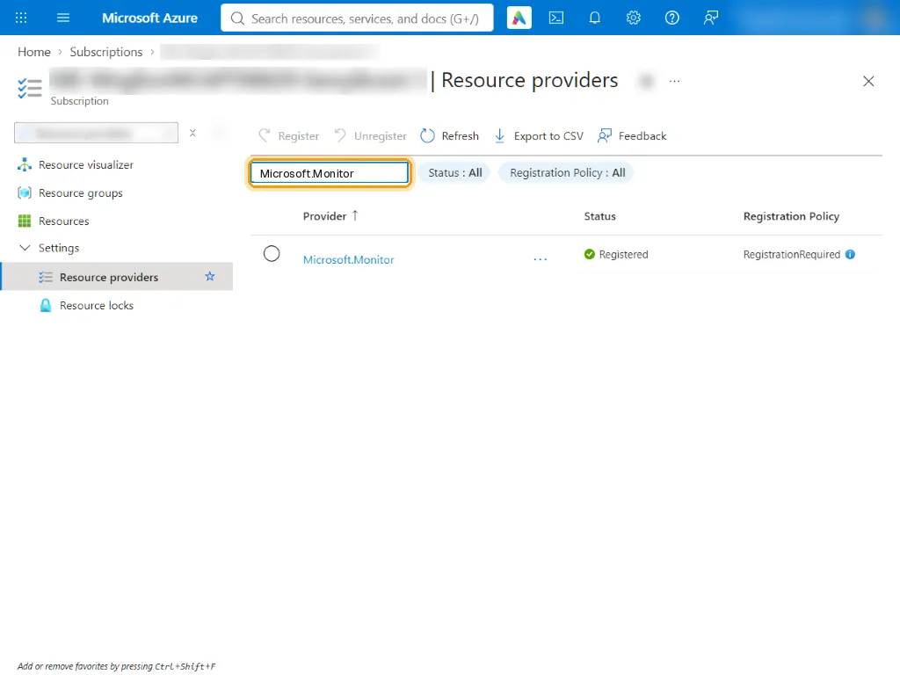
Azure portal Microsoft.PolicyInsights is needed by the Azure Policy add-on for AKS. If a provider shows NotRegistered, select it and click Register.
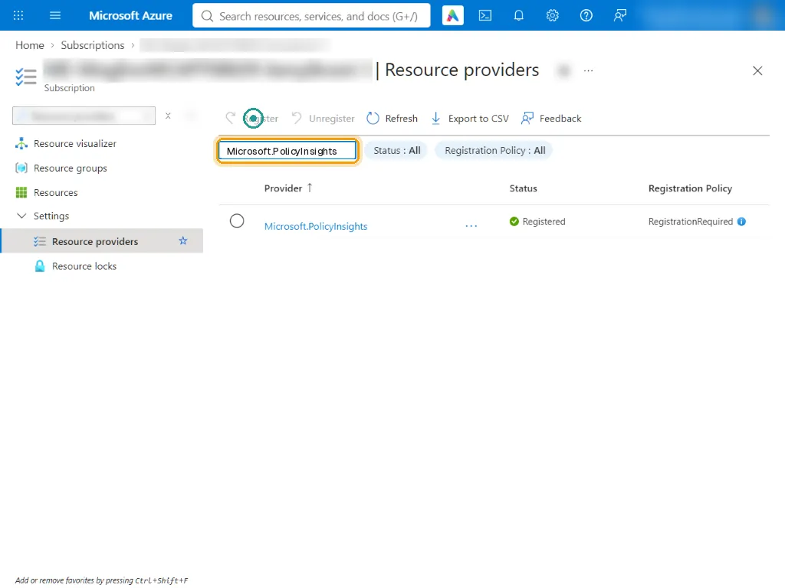
Azure portal
| Resource provider | Used for |
|---|---|
Microsoft.ContainerService | The AKS cluster |
Microsoft.ContainerRegistry | Azure Container Registry |
Microsoft.OperationalInsights | Log Analytics workspace (Container insights, audit logs) |
Microsoft.Insights | Data collection rules, diagnostic settings, action groups |
Microsoft.Monitor | Azure Monitor workspace (managed Prometheus) |
Microsoft.AlertsManagement | Prometheus rule groups (recording and alert rules) |
Microsoft.PolicyInsights | Azure Policy add-on for AKS and compliance data |
Microsoft.ManagedIdentity | The GitHub deployment identity and the AKS identities |
Microsoft.Network, Microsoft.Compute | Load balancer, public IP, node virtual machine scale sets |
Check vCPU quota#
Open Quotas, My quotas (Provider: Compute). In the Region filter, clear All and pick Indonesia Central.
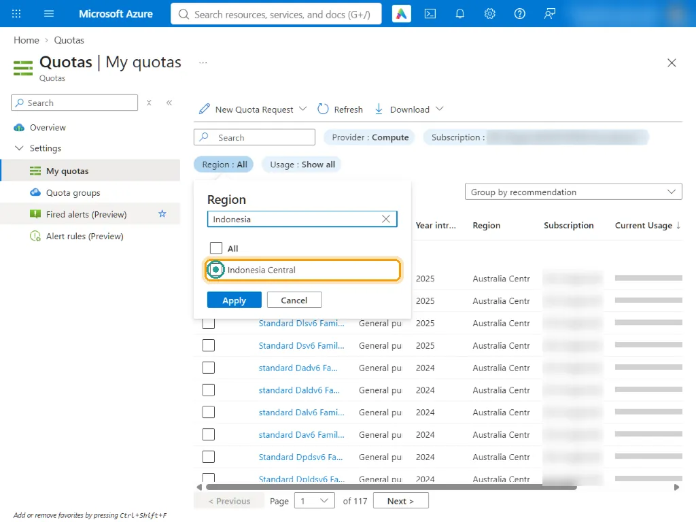
Azure portal Search DDSv5: 0 of 100 vCPUs used. The cluster needs 8 vCPUs (2 nodes of Standard_D4ds_v5) and up to 16 when it autoscales to 4 nodes.
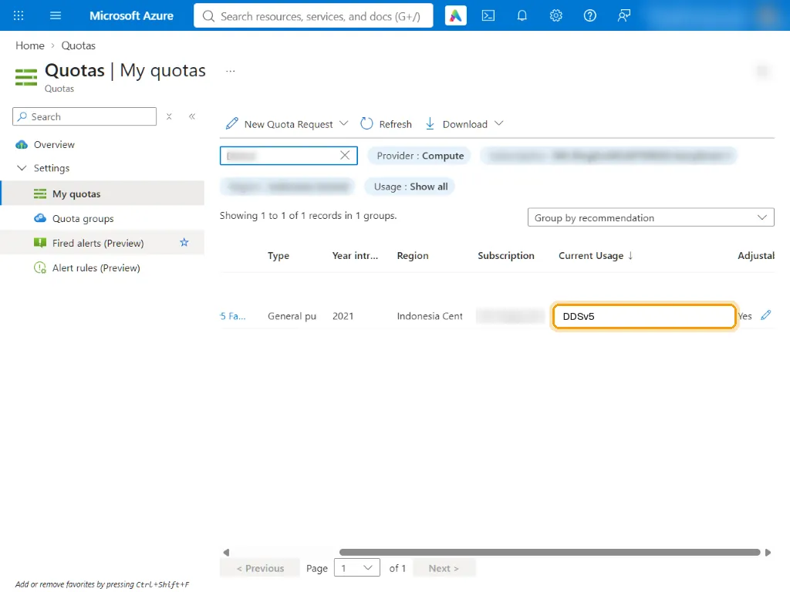
Azure portal
The system node pool starts with 2 nodes of Standard_D4ds_v5 (4 vCPUs each) and the cluster autoscaler can grow it to 4: plan for 16 vCPUs, plus surge nodes while AKS upgrades (the template sets maxSurge: 33%: one extra node at 2-3 nodes, two at 4). If your quota is lower, select New Quota Request or set the AKS_NODE_VM_SIZE repository variable (step 4) to a size you have quota for.
Create the resource group#
Open Resource groups and select + Create.
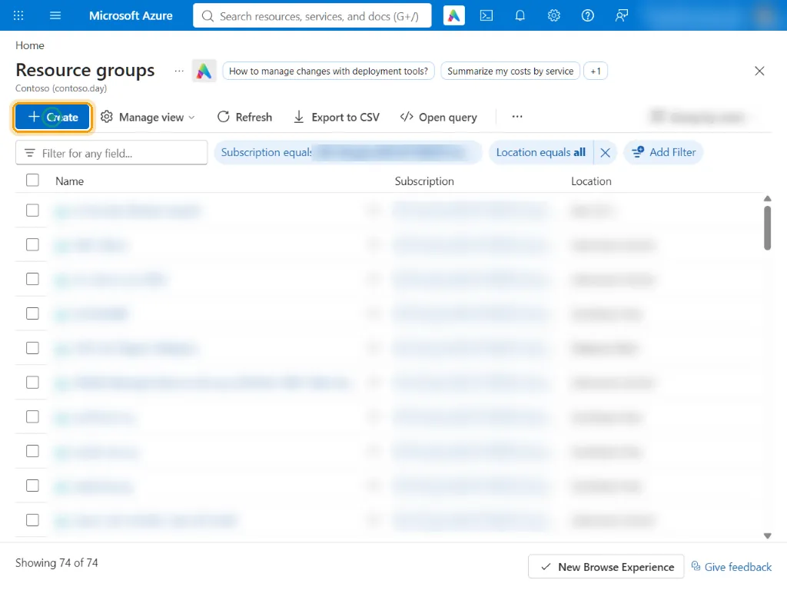
Azure portal Basics: keep your subscription, name the group rg-contoso-health-aks, then open the Region list.
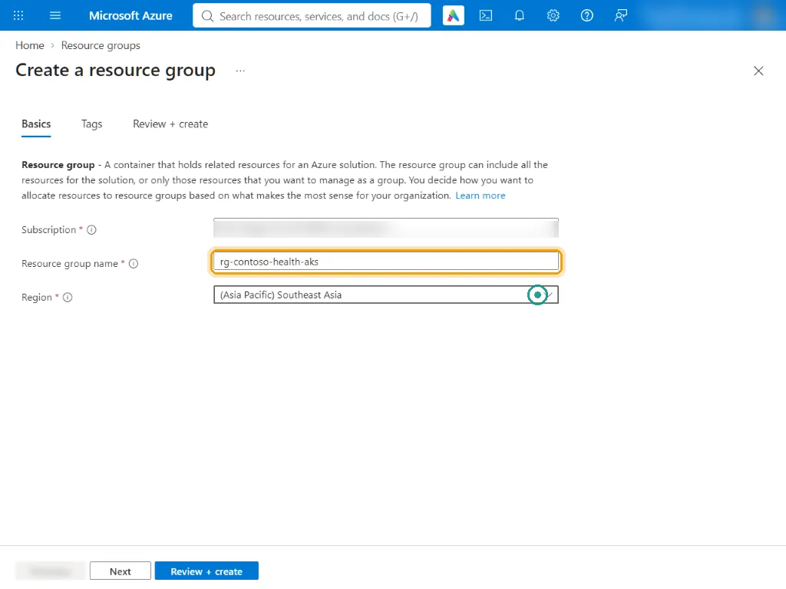
Azure portal Region: choose (Asia Pacific) Indonesia Central so data and compute stay in Indonesia.
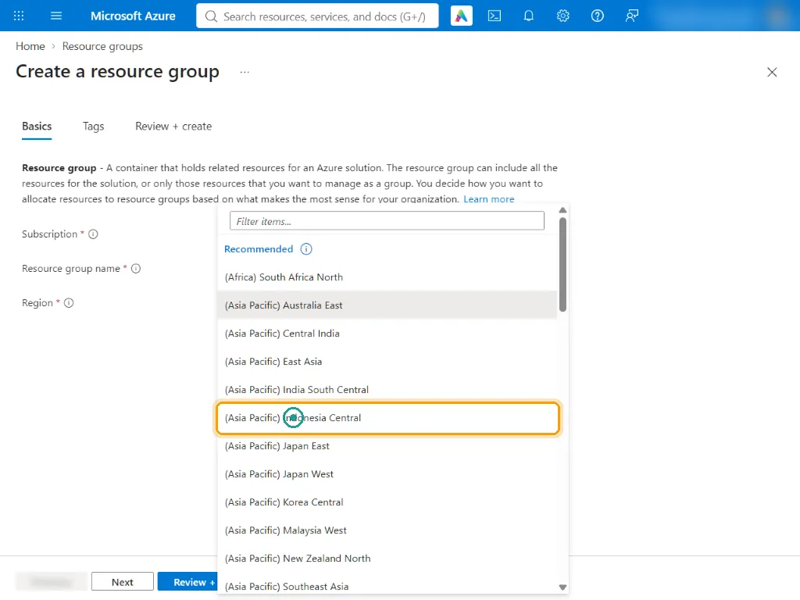
Azure portal Open the Tags tab. Tags drive cost reporting and governance.
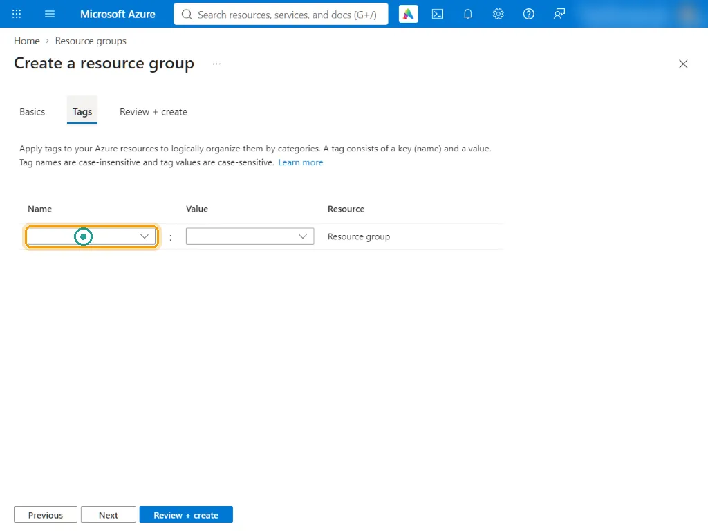
Azure portal Add three tags: workload = contoso-health, environment = demo, cost-center = demo. Then select Review + create.
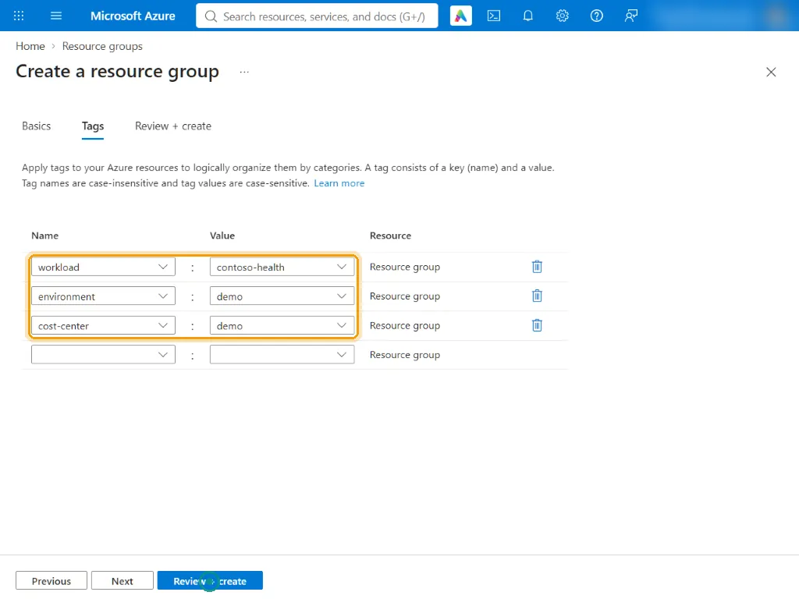
Azure portal Review the summary: rg-contoso-health-aks in Indonesia Central with three tags. Select Create.
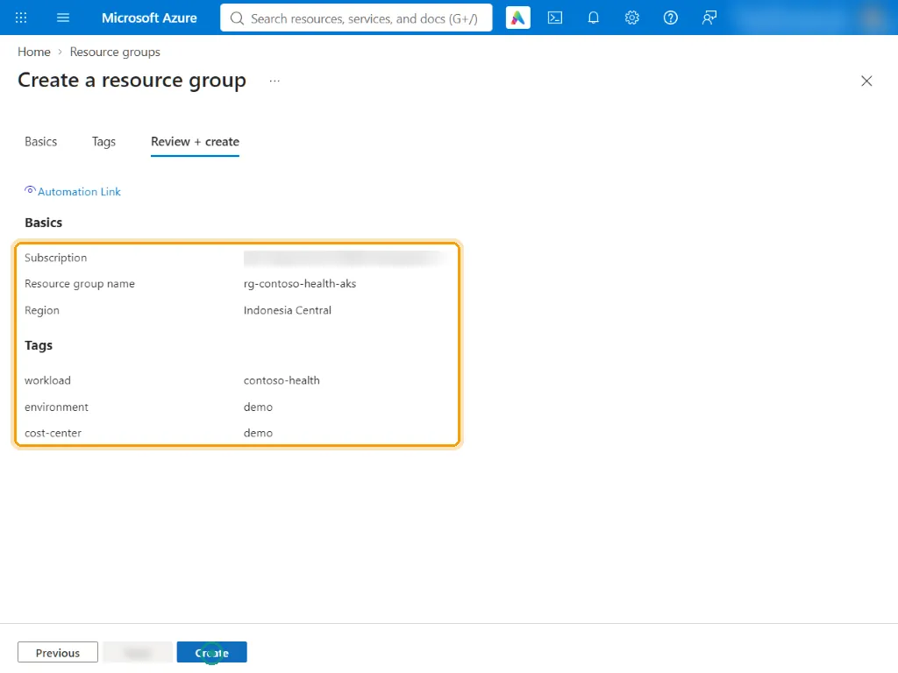
Azure portal Done: the notification confirms the resource group was created. Everything for the demo lands here, which makes clean-up a single delete.
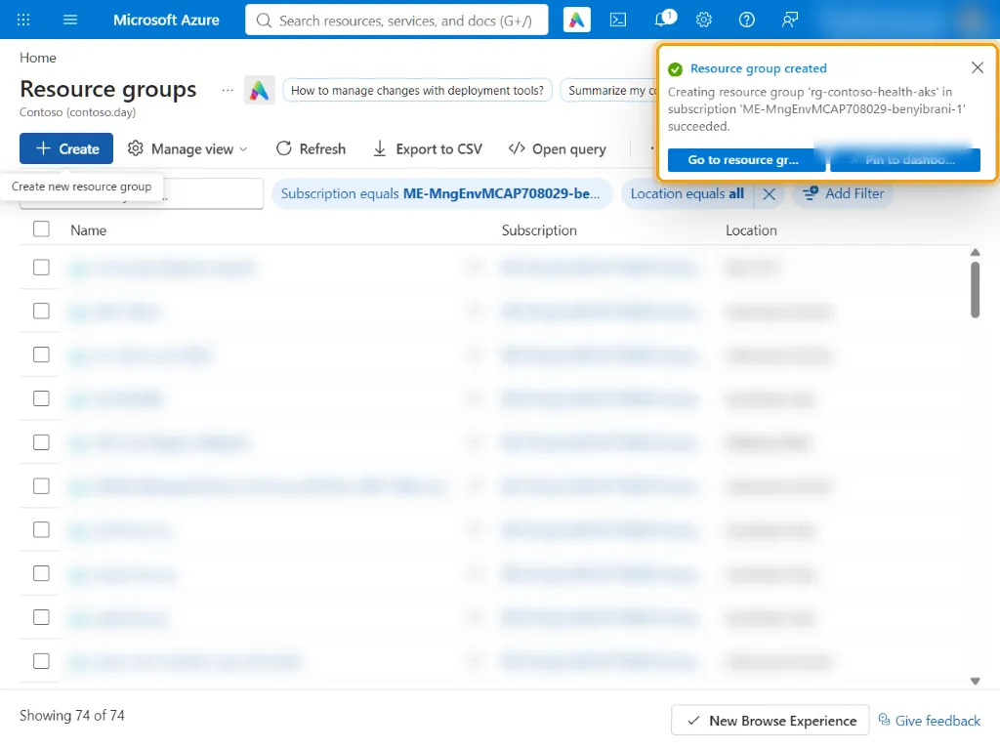
Azure portal
| Tag | Value | Why |
|---|---|---|
workload | contoso-health | Groups cost and inventory by application |
environment | demo | Separates demo from production spend |
cost-center | demo | Charge-back in Cost Management |
Resources do not inherit resource-group tags automatically. The Bicep template applies its own tag set to every resource it creates (workload, environment, managed-by, data-classification, cost-center).
Do it as code#
Two parts of this step are not resources, so they are commands rather than templates: registering resource providers and checking quota are subscription-level actions for an admin. scripts/bootstrap.sh does both, then deploys the resource group from Bicep.
echo "==> Resource providers (registration is a subscription-level action, so the admin does it here)"
for ns in Microsoft.ContainerService Microsoft.ContainerRegistry Microsoft.OperationalInsights Microsoft.Insights \
Microsoft.Monitor Microsoft.AlertsManagement Microsoft.PolicyInsights Microsoft.ManagedIdentity \
Microsoft.Network Microsoft.Compute; do
state=$(az provider show --namespace "$ns" --query registrationState -o tsv)
if [ "$state" != "Registered" ]; then
echo " registering $ns ($state)"; az provider register --namespace "$ns" -o none
else
echo " $ns Registered"
fi
done
echo "==> vCPU quota for the node size (DDSv5 family, 16 needed at full scale)"
az vm list-usage --location "$AZURE_LOCATION" \
--query "[?name.value=='standardDDSv5Family'].{family:name.localizedValue, used:currentValue, limit:limit}" -o tableThe resource group and its tags are the first resource in the bootstrap template:
resource rg 'Microsoft.Resources/resourceGroups@2024-03-01' = {
name: resourceGroupName
location: location
tags: tags
}Run everything for steps 2 to 4 from Azure Cloud Shell (portal toolbar, Bash): az, gh, jq and terraform are already installed there.
git clone https://github.com/<you>/contoso-health-aks-demo.git
cd contoso-health-aks-demo
gh auth login # GitHub CLI sign-in, device code in the browser
GITHUB_OWNER=<you> bash scripts/bootstrap.sh # steps 2-4: Bicep what-if + deploy, then TerraformCheck your work#
- Every provider in the table shows Registered.
- The DDSv5 family in Indonesia Central has at least 16 free vCPUs, ideally 24 to cover upgrade surge nodes.
rg-contoso-health-aksexists in Indonesia Central with the three tags.
How it works#
Indonesia Central (indonesiacentral) keeps data and compute in the country and offers availability zones, which the node pool uses (zones 1, 2 and 3). One resource group per workload keeps access control, policy scope, cost reporting and clean-up simple.
AKS also creates a second, managed resource group for the node resources (named MC_rg-contoso-health-aks_aks-contoso-health_indonesiacentral). You do not manage it directly; it is deleted together with the cluster.